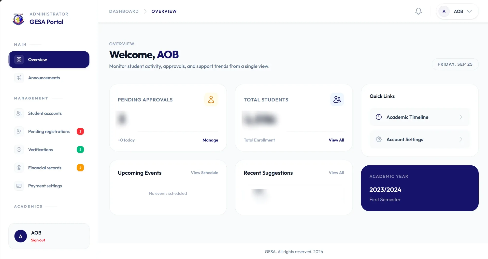
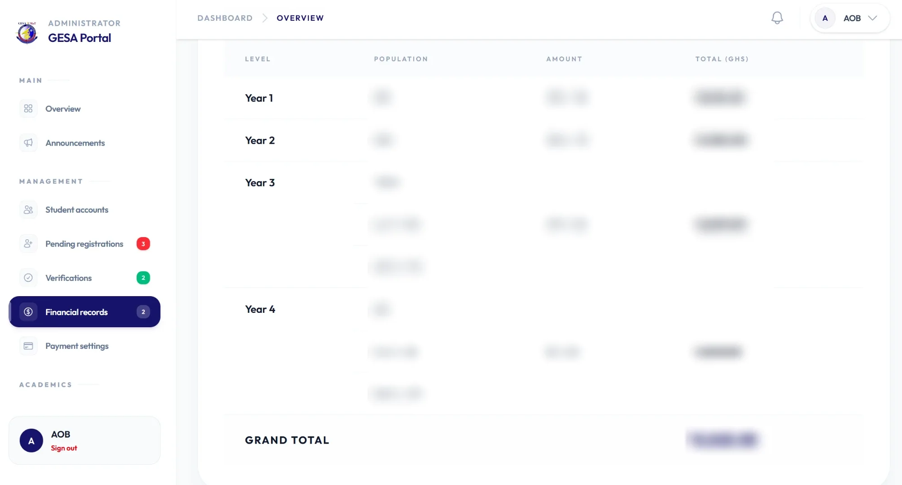

The brief
The executives of two departmental associations needed a proper way to run things and talk to their students.
Dues, announcements, events, study resources and student complaints all need a home. When they live across group chats and spreadsheets, messages get lost, payments are hard to track and new executives inherit a mess every year. ACSES and GESA wanted one portal where all of it lives, and I built it.
What it does
Students get their own account. Executives get an admin side to manage everything. Both portals cover the same core jobs:
- Dues and paymentsExecutives set dues for each year group, and the portal tracks who has paid, who is pending and who still owes.
- AnnouncementsOne place for official news, so important messages are not buried in a busy group chat.
- EventsUpcoming programmes and meetings, with the date and details students need.
- ResourcesPast questions, notes and useful files, shared with members in one organised place.
- Issues and suggestionsStudents can report a problem or make a suggestion, and executives can follow it up and mark it resolved.
- Registrations and verificationNew students sign up, and executives check and approve them before they get access.
Inside the portals
Each association has its own branding, but the same clear layout: a simple side menu, and a dashboard that shows what needs attention first.


Numbers and names in these screenshots have been blurred in the images themselves. Student and payment data stays private.
Built for sensitive data
These portals hold student records and payment information, so security was part of the plan from the first day.
- Only approved students get in. New registrations are checked by executives before an account is active.
- Admins see only what they need. The executive side is separate from the student side.
- Protected accounts. Hashed passwords, safe forms and protection against repeated login attempts.
- A clear record of dues. Every payment is tracked, so nothing depends on memory or paper receipts.
The result
Both associations now run on their own portal.
- Executives see members, dues and open issues at a glance.
- Students have one place for news, events, resources and their dues.
- Problems get reported and followed up, instead of lost in a chat.
- Everything carries over when a new executive team takes charge.